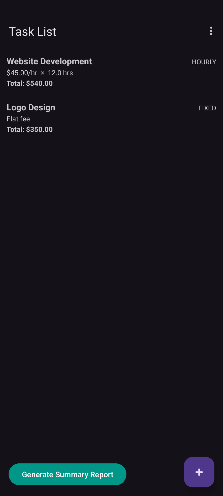
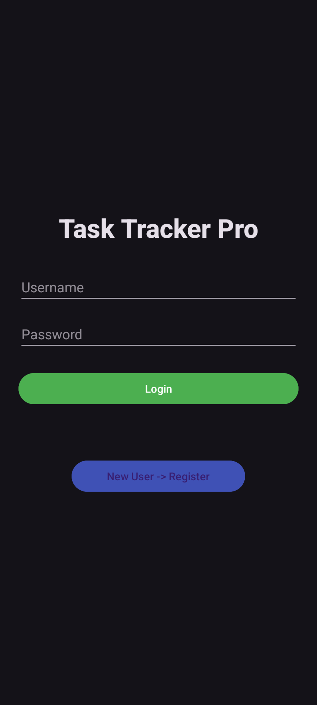
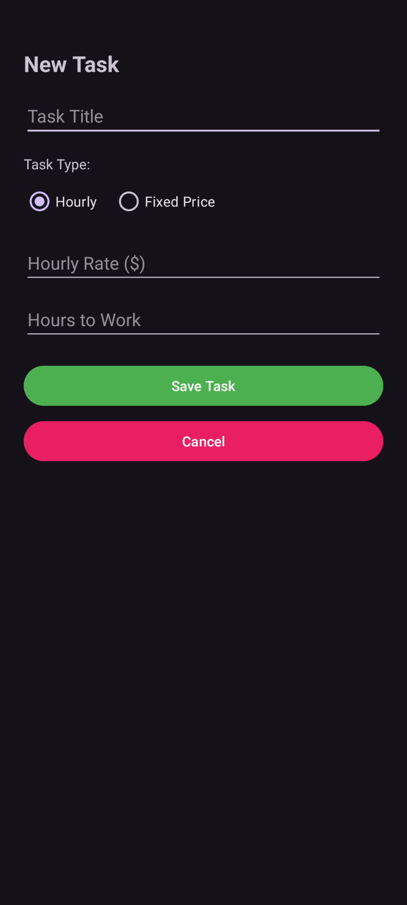
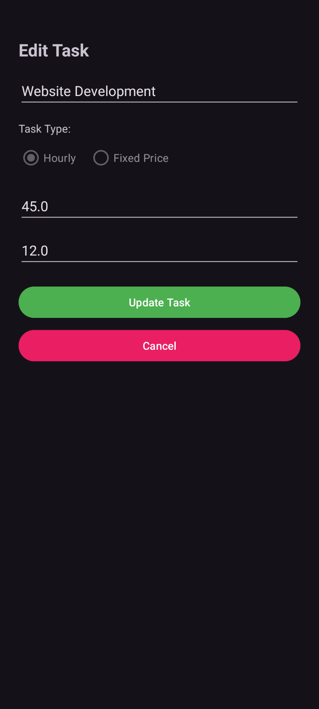
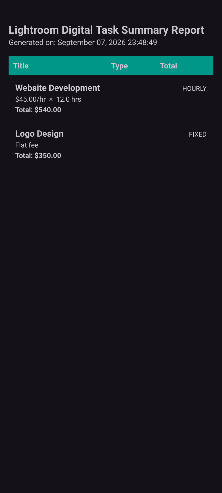

Task Management
Create, view, search, update, and delete tasks through a native Android interface.
Software Engineering Capstone
Native Android task and project cost management application

About
Task Tracker Pro is a native Android application developed as my Software Engineering capstone at Western Governors University. The application helps users create and manage hourly and fixed-price tasks, calculate project costs, persist task data locally, and generate task summary reports.
Capabilities
Create, view, search, update, and delete tasks through a native Android interface.
Supports both hourly tasks and fixed-price tasks with separate calculation behavior.
Calculates hourly totals from rate and hours worked while preserving fixed-price totals for contract-based tasks.
Uses Android Room to store application data locally between sessions.
Users can locate existing tasks and modify task details as work requirements change.
Generates task reports containing task type, cost information, and a report-generation timestamp.
Application




Design
hourly rate × hours
fixed project price
Engineering
Technology
Context
Task Tracker Pro was developed as the capstone project for my Bachelor of Science in Software Engineering at Western Governors University.
The source code remains private in accordance with academic and course repository requirements. This page documents the application, architecture, and software engineering concepts demonstrated by the project.
Download APK